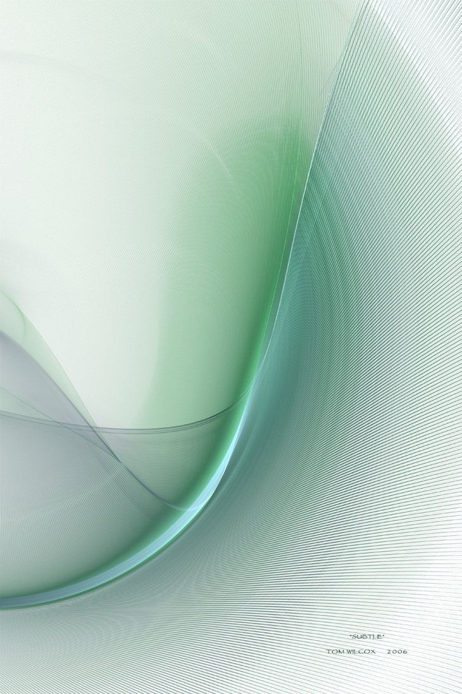
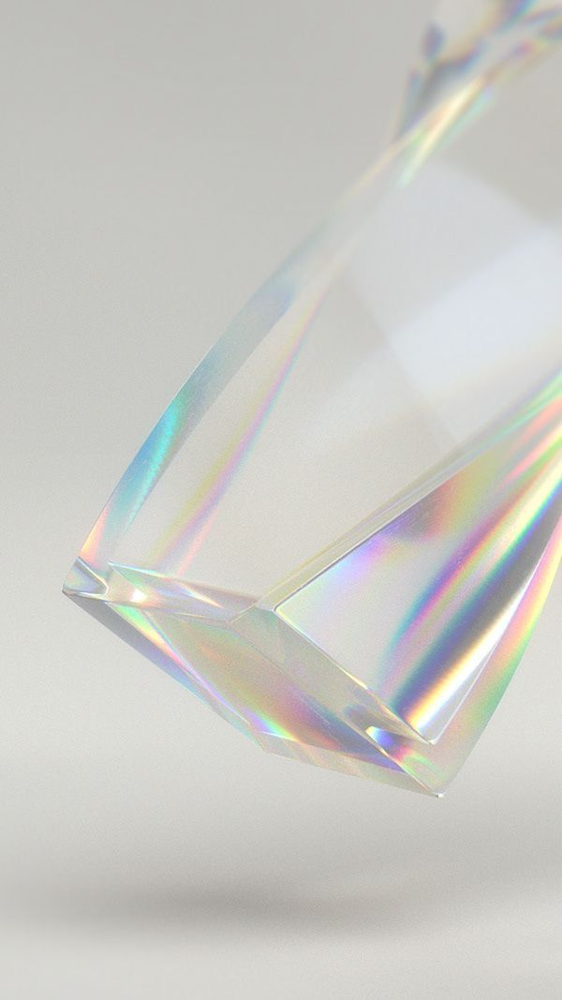
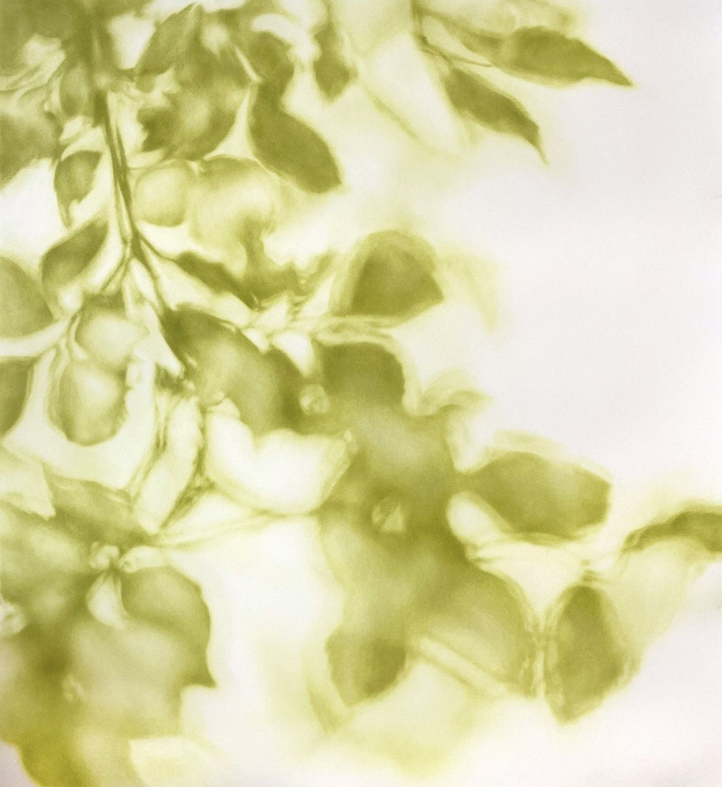
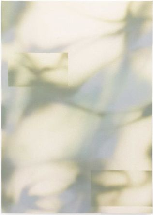

News
最新动态
这里记录着常春藤资本的最新投资动态、行业观察、品牌活动与生态合作，以及被投企业在技术创新、产品进展和商业化探索中的重要里程碑。
IValueYou
Ivy Lab
2026.5.28
通往AGI的终极问题：宇宙是不是可压缩的
阅读全文 →Ivy Portfolio
2026.5.20
AI for Materials公司「新研智材」 完成数千万元天使轮融资，用AI算出下一代半导体材料
阅读全文 →Ivy Events
2026.5.18
Sharpa×上海交大副教授邓志杰，从机器人灵巧手到隐空间统一模型，“具身智能”主题学术沙龙
阅读全文 →Ivy Portfolio
2026.5.18
祝贺轻工业全品类机器人第一股「翼菲科技」成功登陆港交所
阅读全文 →Ivy Monthly
2026.4.30
向上攀，向光行
阅读全文 →Ivy Portfolio
2026.4.20
国内推理GPU独角兽曦望再获超10亿元融资，重构AI推理
阅读全文 →
Ivy Portfolio2026.4.17
写在乐言科技成立十周年之际——创始人沈李斌
阅读全文 →Ivy Monthly
2026.4.8
春潮涌动
阅读全文 →Ivy Events
2026.4.2
「AI光学」主题学术沙龙，禾赛公司首席科学家孙恺 × 26岁Nature独立一作
阅读全文 →Ivy Portfolio
2026.4.2
常春藤资本早期项目「烟山科技」完成数亿元A轮融资
阅读全文 →Ivy Views
2026.3.30
GTC2026、光博会落幕，CPO离我们还有多远
阅读全文 →Ivy News
2026.3.26
饮水思源，常春藤向上海交大捐赠1300万元设立“常春藤特长学生奖学金二期”
阅读全文 →Ivy Portfolio
2026.3.23
机器人不止是大脑之争，「镜识科技」打造机器人里的F1
阅读全文 →
Ivy Portfolio2026.3.18
智能运动眼镜「光粒科技」完成近亿元Pre-B轮融资
阅读全文 →Ivy News
2026.3.11
常春藤资本2025投资人大会于杭州圆满收官
阅读全文 →Ivy Monthly
2026.3.5
未来不等观望者
阅读全文 →Ivy Views
2026.2.27
SaaS崩盘还是重估，汇丰的逆向观点“软件将吞噬AI”
阅读全文 →
Ivy Monthly2026.2.6
Better to Be Optimistic and Wrong
阅读全文 →Ivy Portfolio
2026.1.28
上海半导体测试小巨人「季丰电子」启动IPO辅导
阅读全文 →Ivy Portfolio
2026.1.23
常春藤早期项目「瑞识科技」完成数亿元C轮融资
阅读全文 →Ivy News
2026.1.22
交大常春藤特长奖学金，获奖名单出炉！
阅读全文 →Ivy Monthly
2026.1.7
凡墙皆是门
阅读全文 →Ivy News
2025.12.31
顺势生长，稳步前行，常春藤的2025
阅读全文 →Ivy News
2025.12.30
我们，一家VC机构，在零号湾开了间咖啡屋
阅读全文 →Ivy Views
2025.12.23
当AI被用作规模化攻击，传统安全模型如何应对
阅读全文 →
Ivy Portfolio2025.12.22
「飒智智能」获数亿元新融资，移动多臂机器人已批量工业落地
阅读全文 →Ivy News
2025.12.15
常春藤资本到访港城大，共商产学研融合新机遇
阅读全文 →Ivy Monthly
2025.12.5
所有足迹都印在山的背面
阅读全文 →Ivy Portfolio
2025.12.2
MrBeast野兽先生X镜识科技，世界最快机器人黑豹Ⅱ对决奥运百米冠军
阅读全文 →Ivy Portfolio
2025.11.28
专访「来牟科技」智能割草机器人明年要冲刺10万台
阅读全文 →Ivy Portfolio
2025.11.17
静电卡盘公司「安弧科技」获常春藤资本领投千万天使轮，加速半导体核心零部件国产化
阅读全文 →Ivy Views
2025.11.12
李飞飞最新万字长文，定义AI下一个十年
阅读全文 →Ivy News
2025.11.10
新坐标・新征程！常春藤上海办公室乔迁仪式圆满举行
阅读全文 →Ivy Monthly
2025.11.6
拾光者，与长坡厚雪同行
阅读全文 →Ivy Views
2025.11.4
Salesforce的Agentic革命与对国内软件企业的启示
阅读全文 →Ivy News
2025.10.29
山水共赴 · 聚力同行
阅读全文 →Ivy Portfolio
2025.10.9
具身智能公司「镜识科技」获常春藤资本独家数千万融资
阅读全文 →Ivy Monthly
2025.9.30
旧地图到不了新大陆
阅读全文 →Ivy Views
2025.9.29
AI正在颠覆创业的游戏规则，接下来会发生什么？
阅读全文 →Ivy News
2025.9.25
常春藤资本受邀参加“中国国际金融30人论坛第21届研讨会”
阅读全文 →Ivy Views
2025.9.16
中国硬件，猛虎下山
阅读全文 →Ivy Portfolio
2025.9.9
重大突破「烟山科技」率先打通8英寸硅基氮化镓MicroLED混合集成工艺
阅读全文 →Ivy Monthly
2025.9.4
慢就是稳，稳就是快
阅读全文 →Ivy Portfolio
2025.9.2
「来牟科技」领跑智能割草机器人赛道！年交付订单数万台，营收破亿，新一轮融资近亿元
阅读全文 →Ivy Views
2025.8.29
The State of AI 2025深度解读：两种增长模式，五大发展路线，五大核心预测和十条关键启示
阅读全文 →Ivy Portfolio
2025.8.28
超导磁体领军企业苏州「普思影」获近亿元融资，加速低液氦MRI磁体国产升级
阅读全文 →Ivy News
2025.8.19
常春藤资本携手香港科技大学，助力更多创新科技项目从香港走向全球
阅读全文 →Ivy Portfolio
2025.8.14
「光粒科技」把智能泳镜卖到全球，相信AR的未来就在不远处
阅读全文 →Ivy Catalyst
2025.8.11
常青荟闭门分享管理十问：从初创到上市20年企业运营经验总结
阅读全文 →Ivy Views
2025.8.8
GPT-5问世，人类迄今为止最先进的AI模型，从模型到平台的全能进化
阅读全文 →Ivy Monthly
2025.8.5
科技无界，成长有声
阅读全文 →2025.8.2
核聚变公司「诺瓦聚变」完成5亿元天使轮融资，刷新国内民营聚变公司单笔融资记录
阅读全文 →Ivy News
2025.7.29
常春藤资本携手上海交通大学举办 2025 WAIC「AI 未来发展论坛：超级智能，无界共创」
阅读全文 →Ivy Portfolio
2025.7.18
杭州公司「烟山科技」获常春藤资本参投近亿元融资，加速全彩Micro LED显示芯片迭代和量产
阅读全文 →Ivy Portfolio
2025.7.16
汽车智能悬架公司「时驾科技」完成亿元A轮融资，落地平湖加速第三代全主动悬架技术研发
阅读全文 →Ivy Portfolio
2025.7.15
机器人电子皮肤公司「杭州慧感」完成战略融资，推动柔性感知走向具身智能主航道
阅读全文 →Ivy Views
2025.7.10
智元机器人收购上纬新材控制权的三点观察
阅读全文 →Ivy Views
2025.7.3
从 Meta 到小米：百镜大战，场景贴合度才是终极战场？
阅读全文 → Ivy Portfolio
Ivy Portfolio2025.6.25
低空智能开创者星逻智能完成超亿元B+轮融资｜常春藤伙伴企
阅读全文 → Ivy Views
Ivy Views2025.6.18
股权激励的智慧：“舍得分”不如“分得对”更重要
阅读全文 →Ivy Views
2025.6.6